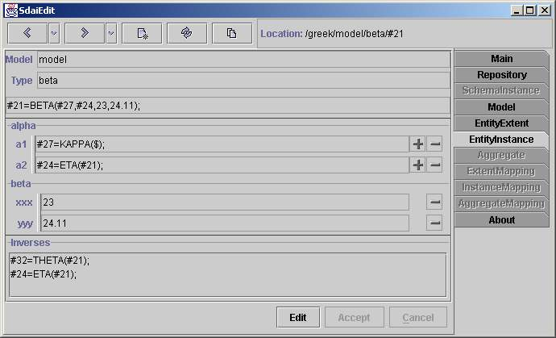

Entity Instance page

This page shows attributes and other data for one entity instance. Model
towhich this instance belongs to and instance type are at the top. Then instance
representation in physical file format are shown.
Attributes
After that all attributes grouped by entity data types are listed. Entity
data types order are the same as inheritance. From top to bottom. For complex
entity data types and multiple inheritance it is more complicated. Attributes
order are as originally was written in EXPRESS file. For every instance there
is four fields in one line. First one is the name of attribute, no operations
on this field available. Second one is the type of attribute. The type writing
is same as in EXPRESS. You can click on this type filed to see the detail
of it. The third field is attribute value with plus and minus buttons for
operations. For enumeration, logical and boolean types
combo boxes with available values are shown instead of text field. If type
of attribute is mixed select type (select are made not just from entity definitions)
that beside attribute value combo box with available selections are placed.
Second and third fields are separated with split, so you can enlarge attribute
value view. With plus button you can set value from sdai clipboard for entity
type and with minus button you can unset value for all attributes Fourth
fieldis for showing is attribute set or not. If '$' mark is present at the
endthen attribute is unset else attribute is set even if no value appear
(set with empty string).
Inverses
Here is listed all instances from which this instance is referenced. If you
are working on schema instance domain then all inverses from this domain
will be listed here.
Button line
With 'Edit' button you can go to edit mode, than you will be able to edit
attributes. 'Accept' and 'Cancel' will accept or cancel your changes. When
you will be in edit mode you will not be allowed go to other pages before
accepting or canceling changes.